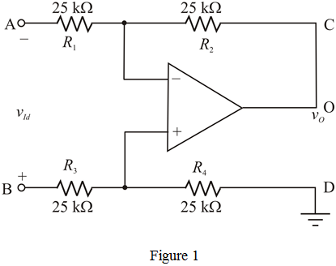
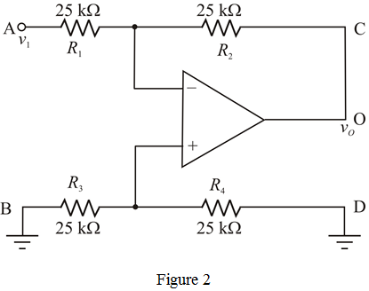
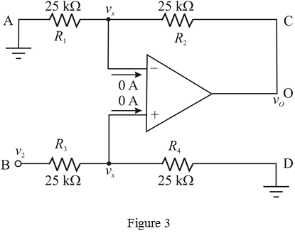
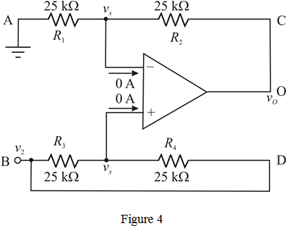
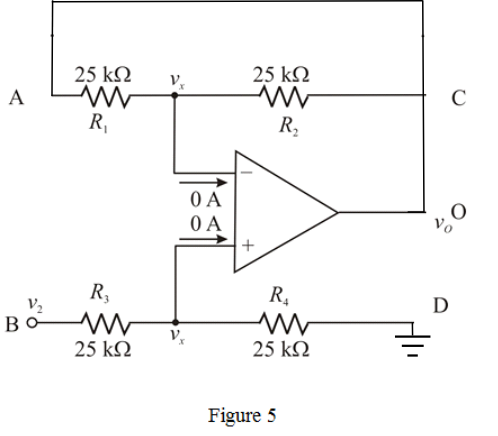

Calculate the inverting amplifier gain.
Therefore, the single-ended differential gain,  is .
is .
(a)
Refer to circuit diagram in Figure P2.71 in the textbook.
Short circuit the terminals, C and O and connect terminal D to ground. The modified circuit is shown in Figure 1.

Calculate the differential gain.
The differential gain is unity gain.
Hence, it is proved.
(b)
(i)
Inverting amplifier provides negative gain, so connect voltage source to terminal A, short circuit the terminals C and O and connect terminals B and D to ground, the modified circuit is shown in Figure 2.

Calculate the inverting amplifier gain.
Therefore, the single-ended differential gain, is .
Non-inverting amplifier circuit provides positive gain, so connect voltage source to B terminal, short circuited the terminals C and O and connect terminals A and D to ground, the modified circuit is shown in Figure 3.

In an ideal op-amp, the inverting and non-inverting terminal currents are zero, and the voltages at inverting and non-inverting node are equal.
Calculate the non-inverting node voltage, using voltage division rule.
Apply Kirchhoff’s current law at inverting node.
Substitute for in the equation.
Therefore, the single-ended differential gain, is .
(iii)
Non-inverting amplifier circuit provides positive gain, so connect voltage source to terminal B and terminal D, short circuited the terminals C and O and connect terminal A to ground, the modified circuit is shown in Figure 4.

In an ideal op-amp, the inverting and non-inverting terminal currents are zero, and the voltages at inverting and non-inverting node are equal.
Apply Kirchhoff’s current law at non-inverting terminal.

Apply Kirchhoff’s current law inverting node.
Substitute for in the equation.
Therefore, the single-ended differential gain,  is .
is .
(iv)
Non-inverting amplifier circuit provides positive gain, so connect voltage source to terminal B, short circuited the terminals C and O and connect terminals A and D to ground, the modified circuit is shown in Figure 5.

In an ideal op-amp, the inverting and non-inverting terminal currents are zero, and the voltages at inverting and non-inverting node are equal.
Calculate the inverting node voltage, using voltage division rule.
Apply Kirchhoff’s current law at non-inverting node.
Substitute for  in the equation.
in the equation.
Therefore, the single-ended differential gain, is .